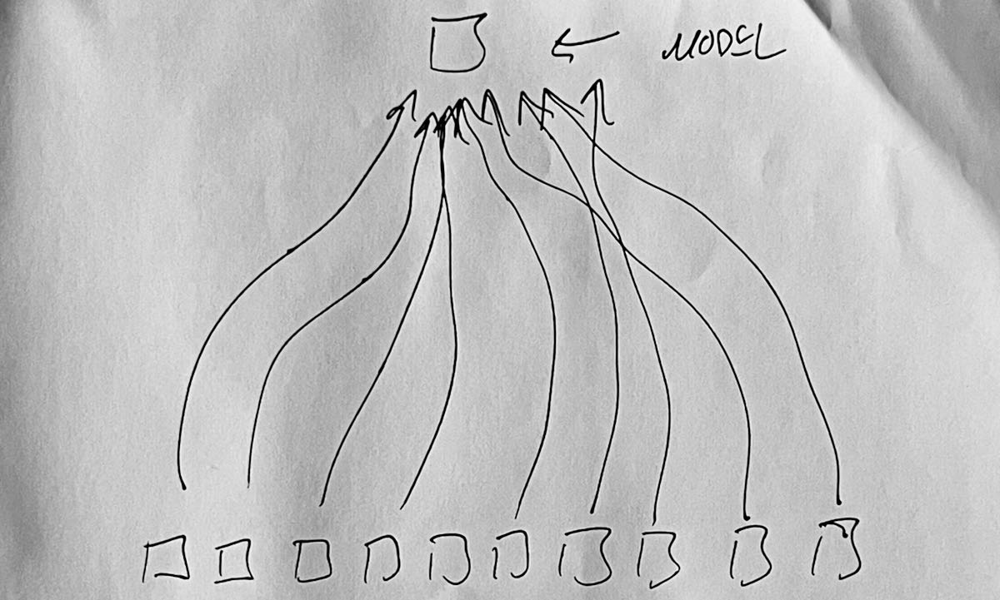
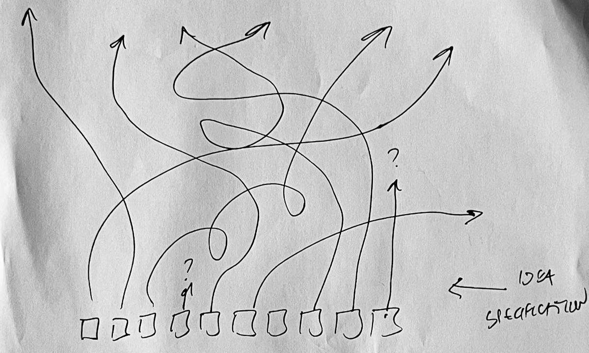
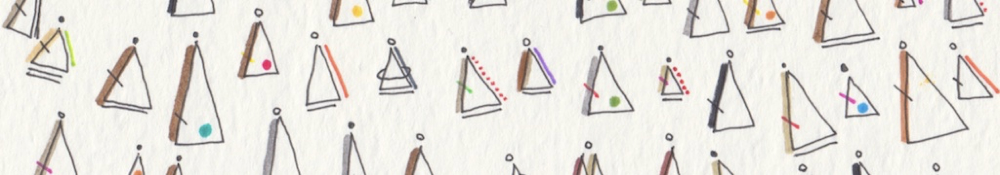
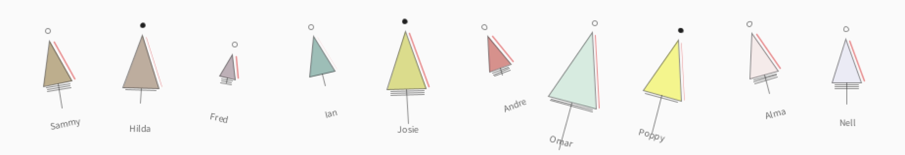

This page provides details of the Dear Data Sketch that you have been assigned, and summarises some of what was discussed in the final lecture on 'Creativity'.
It is not a complete record of all that was discussed in a somewhat unstructured lecture in which little new content featured. The lecture was a summary, a send-off and an attempt to inspire.
1. Dear Data Sketch
We have asked you to produce a Dear Data Sketch.
This should be ...
that depicts a data set that you have collected over time
that explores some aspect of the World
that is interesting to you
We hope that you will do this ...
that you are pleased with
And that the process (and perhaps the sketch) ...
Maybe just a little!
Those are the key requirements, it's as simple as that!
But additionally ...
We would like the sketch to be ...
We would like to see you using the coding constructs and capabilities that we have introduced, including ...
We also encourage you to ...
find your voice;
experiment;
celebrate your mistakes;
don't worry about anything;
take this wherever you want it to go;
have fun;
not go crazy
(by which we mean - put a reasonable amount of work into this, and make sure that other commitments, sleep, nutrition, relationships, exercise, keeping up with The Great British Bake-Off as it reaches its unimaginably tense and exciting denouement, are not compromised);
That's it - see what you can do.
2. Data Depiction and Generative Design
I want to think a little about creativity, generative art and data depiction in today's lecture.
For now - here is some code to try out:
// -- Generative Design Grid
// -- Generative Art : Line Interference
int lines = 40; // <-- number of static lines
int linesR = 40; // <-- number of rotated lines
float yTop, yBot ;
void setup () {
size(300, 300);
translate(width/2, height/2); // <-- translate origin to centre of canvas
yTop = -height*0.4; // <-- min y position of lines (after translation)
yBot = height*0.4; // <-- max y position of lines (after translation)
}
void draw () {
background(255);
translate(width/2, height/2);
strokeWeight(map(mouseY, height,0, 12,1));
// -- vertical lines:
for (int i=0; i<lines; i++) {
float x = map (i, 0, lines-1, -width*0.4, width*0.4);
line (x, yTop, x, yBot);
}
// -- rotated lines :
rotate(map(mouseX, 0, width, 0, TWO_PI));
for (int i=0; i<linesR; i++) {
float x = map (i, 0, linesR-1, -width*0.4, width*0.4);
line (x, yTop, x, yBot);
}
}
void mouseClicked () {
// -- change number of lines based upon mouse position:
lines = int(map(mouseX, 0,width, 3,100));
linesR = int(map(mouseY, 0,height, 3,100));
}
And a few pictures - output from the above and interacting with this sketch.
 |
 |
 |
 |
 |
Canvases saved from the above sketch, with different visual characteristics. How do they vary?
I'd like you to think about the information carrying capacity of these graphics.
They all have similar structure, and are generated by the same algorithm.
And yet they vary in many ways, and might vary in others - such as
where they are positioned, their colour, their size, the line pattern (dashed, dotted, etc.)
Patterns and Data Depiction
If you captured this kind of pattern in a class, how many fields do you think you could add to the class that might then be used for data depiction?
3. (Dear Data Diary) Design Process ...
I want to say something about Design Process and the way that we hope and expect you to use your data and ideas in the Dear Data Sketch.
Remember that in Dear Data, Giorgia Lupi and Stefanie Posavec see data as an informative inspiring starting point for play and expression that helps us (you) engage with the world ...

So we want you to be experimental, play with data and your Processing skills and knowledge to experiment. Be inspired by what you see in the various examples that you have engaged with, in the module and elsewhere, to try things out. Sketch in your Notes & Sketches books, and play with the code to see what happens as you try to depict dat in interesting ways.
In the Creativity : Lecture I introduce Damien Newman's Design Squiggle in an unmissable segment from 13:50 - 16:30.

Reproduced under a Creative Commons Attribution-No Derivative Works 3.0 United States License.
https://thedesignsquiggle.com
This is intended to capture the chaos and refinement of the design process when your ultimate output is unknown - exactly what we are doing here in Dear Data sketching.
Newman talks about moving from Uncertainty at the start of the process (left) to Clarity & Focus at the end (right), but the path is by no means smooth (squiggle)!
He uses the terms Abstract -> Concept -> Design to capture the process as we move (chaotically, unexpectedly, non-linearly) from left to right.
As I consider all of this to be 'design' (verb) ... that results in a 'design' (noun), I prefer to use the terms Brainstorming -> Refining -> Finishing to describe ways that the design process might follow the squiggle to generate an interesting design. And in your Dear Data Sketch you may only get as far as some brainstorming part sketch that is incomplete and best used as the basis for better ideas.That's OK! That's learning!
You may have noticed above that I used the phrase: when your ultimate output is unknown.
This is an important part of this task and the #CreativeCoding activity.
We said at the outset that we are trying to promote and give you experience of a means of learning and a form of activity that may not be typical of your experience at school. We are not providing model answers. We are presenting the notion that each student has a perfectly viable different good answer that meets the needs of the activity. We know that you are good at producing a solution when given an example and that you have been trained to do this. Here we are giving you material, skills, knowledge, instructions, a vague specification and the space to do something that brings these things together into a unique solution. So, there is no model answer, there are just answers, and many of them.
|  |  |
These sketches try to show how this works diagrammatically, building a little on The Design Squiggle but moving from bottom to top instead of left to right, and there is a reason for this!
On the left we see a 'Model Answer' approach. We provide a solution and ask you to achieve it. The boxes at the bottom are students, and what we find, unsurprisingly is that most students converge to the model. We find that this happens even if we have an open task and suggest some solutions. Most students will, perhaps understandably, converge to a piece of work that is very heavily based upon one of the examples.
On the right we see the 'Idea Specification' approach. This is the one where we tell you what we want (see Section 1 above), equip you with the skills and experience and capability to work on it (see #CreativeCoding activity) and ask you to come up with something that fits. People make progress to wards a unique solution (the top of the page) in a non-linear way and might end up somewhere unexpected. Some people may get a little lost, and the solutions that are produced are varied in terms of complexity, focus, approach, satisfaction, success and pretty much any other criteria we might think of. We end up with a diverse set of outputs. Now this is a module about creativity so we expect you to be creative and help you with some ideas and processes to support this - see the Creativity : Lecture in which I explain and use (re-interpret and modify) the SCAMPER from 08:00 - 13:50.
Now, we understand that this is hard, and risky and there is no guarantee that you will get anywhere at all - which is why #CreativeCoding is voluntary, not graded, bears no credit and as such offers a risk-free space in which to try this approach, an approach in which you produce something original that is specific to you. We think it's important. We are making it safe. While the activity is pointless in terms of grades, we think that it's far from worthless in terms of experience, learning and opportunity. And there are some tangible rewards too: What's the Point?
Or maybe it's not that hard?
See (and read and consider and discuss) Dear Data - To DRAW is to REMEMBER, which is flagged as Essential Reading on the Reading List.
4. Data Dogs
Having said all of that we understand the need to demonstrate some of the ways in which the things you are learning can be put together to begin to address the task in hand. One of the important things that we want you to consider is the use of the class capability in Processing to define and instantiate objects that hold and depict data about particular phenomena - the ones that you are recording data about.
We provide a simple example of how this might be achieved in the progressively sophisticated Robot classes presented in Objects : Robots.
Here's another one that you will remember from the Creativity : Lecture.
I spent 5 minutes (24:54 - 30:00) presenting some code that captures data in a class and uses objects that contain drawing methods to depict data in interesting and original ways. The code is based upon a modification of Week 34 : A week of urban wildlife: Data Dogs!
|  |
|  |
You can watch the Creativity : Lecture (24:54 - 30:00) to see how this all works, but basically...
I have a tab containing the globals, setup() and draw().
» Code :dataDogs.pde Show code
A second tab contains the Dog class, with fields, a constructor and methods to draw() (canvas) and print() (console) characteristics of the object.
» Code :Dog Show code
I have an 'interaction' tab in which I define reactions to events - just keyPressed() in this case.
» Code :interaction Show code
I put code that I have acquired from existing sources in a tab with the named author - 'Kornel Kisielewicz' in this case - to make it absolutely clear of that this is not original code and to make it easy toi find and confirm the original source.
» Code :kornel kisielewicz Show code
I also separate out the code that involves licensing, just because this is an important emphasis in this example.
» Code :showLicenses Show code
Have a look at the code to get ideas about how to combine classes, sounds and interaction to depict data.
If you want the code to work, then try using the arrangement shown below, with a tab for each code example.
However, I have not provided the sound files, so you'll need to get some wild sounds of howling and barking, or use the example sounds that we provided in the Processing Sound Test to hear anything.
Here are the names, URLs and licenses of the files I used should you want to get hold of them.
This file needs to go in the 'data' folder to make the sketch work.
To be honest, I suggest you have fun finding some other sounds instead : MODIFY!
./data/dogSoundLicenses.txt Show code
Hopefully this gives you some ideas, you may want to try to get it working, but the main intent here it to show you that we can combine programming concepts and data in ways that are inspired by, but differentiable from, existing efforts, to produce something interesting and original: Combine, Adapt, Substitute.
5. And The Rest ...
The rest of the lecture was a bunch of tips and examples, ways to try to inspire you into being expressive and creative in your #CreativeCoding efforts.
I spoke a little about creativity and encourage you to think outside the box when #CreativeCoding.
I encouraged you to engage with the law on Copyright, which is discussed in Art : Core document and on a page of Copyright Discussion & Examples.
It's pretty simple and following some principles of good practice will keep you safe.
There were a few tips on engaging with your tutors, and encouragement to submit a Dear Data Sketch, as described above, so that you qualify to receive:
- a Creative Coding Commentary - from your personal tutor, for use in reference writing and recommendation letters
- a Digital Badge - from the Department of Computer Science, to display on LinkedIn and other social media where you promote your capabilities, competencies and experience
- an invitation to a Pizza & Data party - to celebrate our success and the start of Term 2 when we all arrive back in January (after the exams!)
Please give it a go - be brave, be creative, be engaged and remember that this activity is Pointless but not Worthless.
I reminded you all to check the Data Collection page for some tips, and not to use Dates or Times in your sketches - just use numbers, with days, minutes, hours or seconds, relative to some starting point.
There was then some stuff on Dogs and Robots (see above), which was intended to encourage you to use class statements to define classes and create objects that contain and depict your data.
It's conceptually simple, graphically powerful and easy to do the basics.
Then it's just about building!
You have all that you need to do this in the #CreativeCoding notes with Objects : Core being a great place to head to for a reminder and Objects : Robots putting it into practice.
And then I disappeared for breakfast!
It's a long way from Leicester!
See you on the Discussion Forum.
Jason.
20 Nov 2024
05 Dec 2024